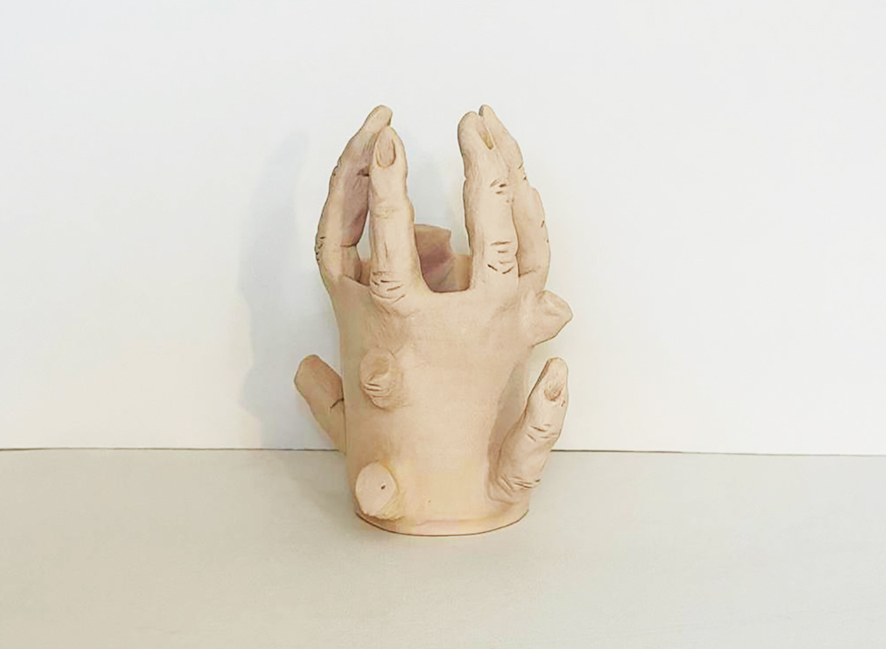
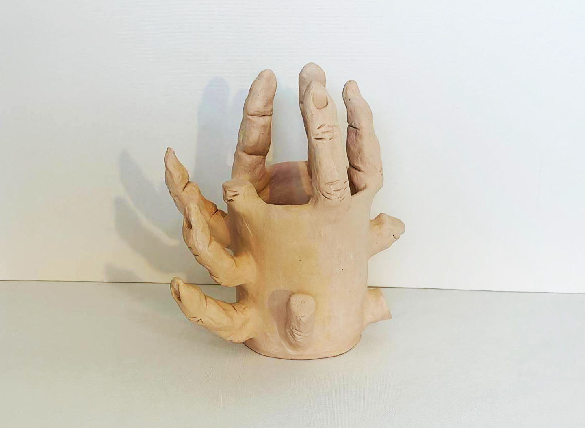
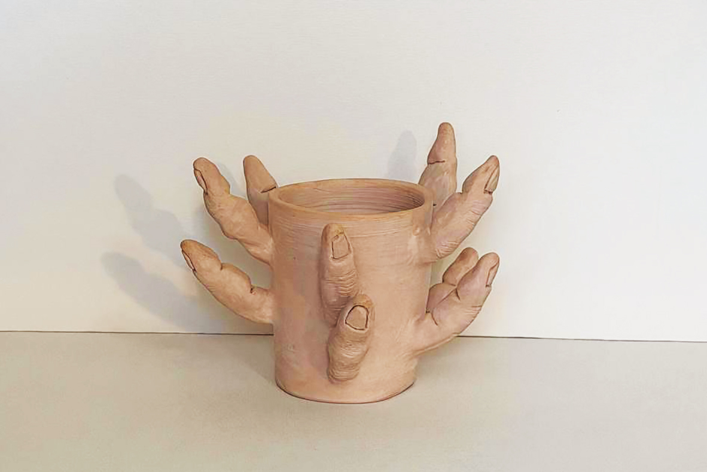
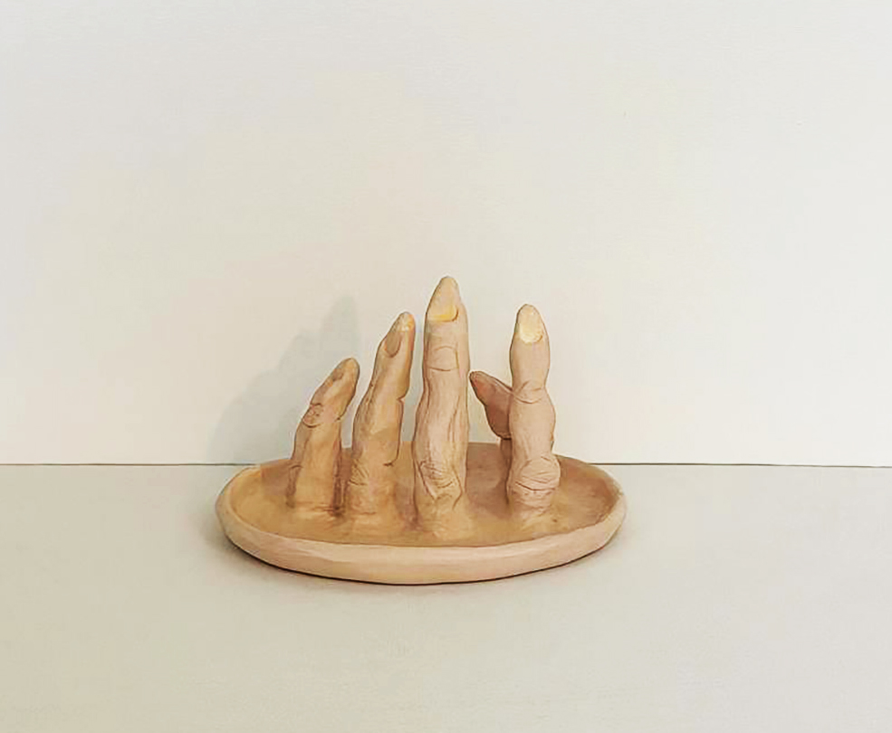
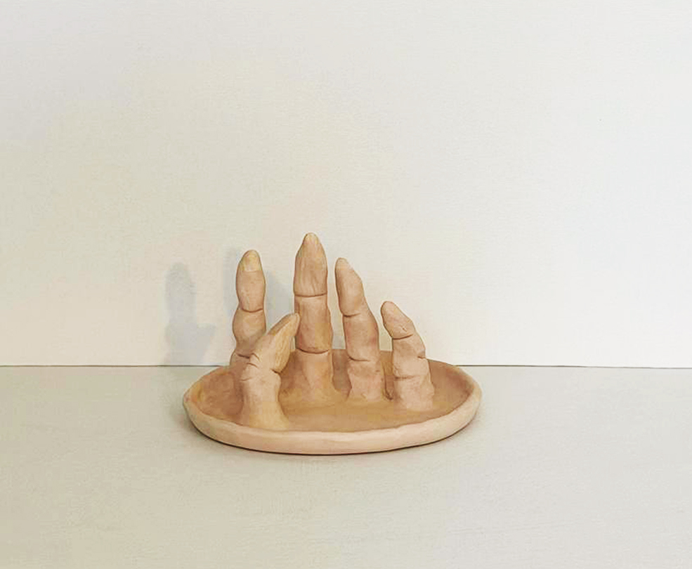

Hands Series
Through rapid drawings and ceramic sculptures, this series explores bodily memory and the traces left by lived experience. The hand moves beyond its physical function to become a site where repetition, suffering, joy, connection, and identity are inscribed. Oscillating between touch, embrace, and release, each gesture reveals the body’s memory while pointing toward a shared human experience.
Extending this exploration from drawing into sculpture allows the physical experience of touch and embrace to emerge more directly, transforming the relationship between the body and material into an integral part of the work itself.
Rapid Drawings
5 pieces


Ceramic Sculptures
3 pieces

Severed fingersCeramic · 17 × 18 × 20 cm · 2022 · two views



Two views